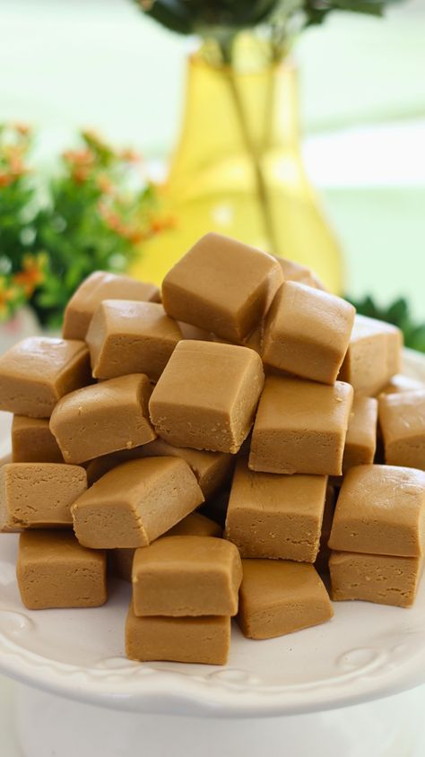

Doce de Leite em Cubinhos
Um doce típico mineiro, feito com leite, açúcar e muito carinho. Macio por dentro, firme por fora e irresistível em cada pedacinho.

Ingredientes
Rende cerca de 40 cubinhos
- 2 litros de leite integral
- 1 kg de açúcar
- 1 colher (sopa) de manteiga
Modo de Preparo
Tempo estimado: 1h30
- Em uma panela grande e grossa, coloque o leite e o açúcar.
- Leve ao fogo médio, mexendo sempre com colher de pau até começar a engrossar.
- Quando a mistura ganhar cor de caramelo claro e desgrudar do fundo da panela, adicione a manteiga e mexa bem.
- Despeje em uma assadeira untada com manteiga e espalhe uniformemente.
- Deixe esfriar um pouco e, antes de endurecer completamente, corte em cubinhos com uma faca untada.
- Deixe esfriar totalmente e sirva.
Dica do Chef: Se preferir um doce mais cremoso, retire do fogo antes do ponto de corte e sirva em colheradas.